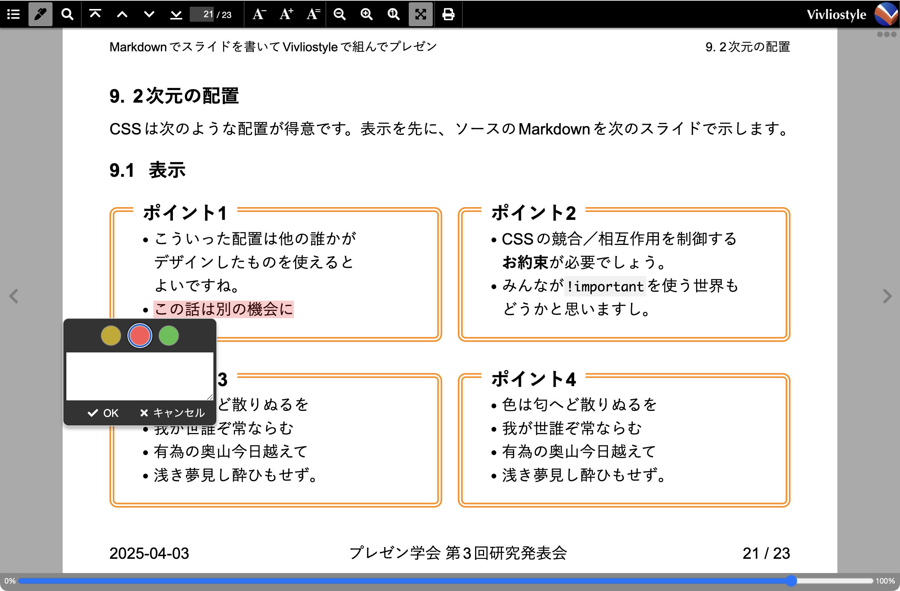

約物の前後の空白の詰め
"「"や"（"といった約物が行頭・行末にきたり連続したりする場合の空白の詰めを,
text-spacing-trimプロパティで制御できます。
text-spacing-trim: normal;で、行頭の約物は詰めませんが、約物が連続するときに詰めます。これが既定値です。
- 「色は匂へど散りぬるを我が世誰ぞ常ならむ有為の奥山今日越えて浅き夢見し酔ひもせず。」
- ヘッダーやフッターに挿入する項目（「日付」、「研究会名」、など）が研究室などで指導されていたりします
text-spacing-trim: trim-both;で、行頭行末や連続する約物の空白を詰めます。
- 「色は匂へど散りぬるを我が世誰ぞ常ならむ有為の奥山今日越えて浅き夢見し酔ひもせず。」
- ヘッダーやフッターに挿入する項目（「日付」、「研究会名」、など）が研究室などで指導されていたりします
スライドはテキストが短く箇条書きも多いので、テキストのまとまりは行頭の揃えで見せるのがよいかもしれません。
このスライド全体にはtext-spacing-trim: trim-both;と設定されています
ヘッダーとフッター
スライド本文のテキストを抜き出して、ヘッダーやフッターに表示できます
- 発表のタイトル（
h1要素）やセクションの見出し（##見出し、つまりh2要素など）といった既定のタグの付いたテキスト
- 日付、発表者、研究会名など既定のタグが付いていないテキスト
総スライド数を数えてくれて、その値を自動生成するテキストに含められます
スライド本文のテキストを抜き出して表示
スライド本文から所定のテキストを自動的に抜き出してヘッダーやフッターに表示できると、本文を修正したときの修正漏れを防げます。
これには、CSSの名前付き文字列(named string1.1. Named strings - CSS Generated Content for Paged Media Module https://www.w3.org/TR/css-gcpm-3/#named-strings)という仕組みを使います。
やり方は大まかに次の手順です:
- 抜き出したいテキストに印を付ける。「印が付く」=「セレクターで選べる」です
- その印を手がかりとしてテキストに名前を付ける
- その名前を使って、表示したい場所にテキストを生成する
次の順に説明します:
- 発表のタイトルやセクションの見出し
- 発表のタイトル、日付、発表者、研究会名など
発表のタイトルやセクションの見出し
発表タイトルにはh1、セクションの見出しにはh2というHTML既定の印(タグ)を付けますね。h2見出しを、自動生成した番号付きで各スライドの@top-rightマージンに表示するとします。
それにはCSSのstring-setプロパティを使って、生成した番号に、例えばchapter-numberという名前を、テキストにchapterという名前を付けます。
h2 {
string-set: chapter-number content(before), chapter content();
}
content(before)はh2の::before疑似要素の内容を示します。content()はcontent(text)という意味で、h2のテキストを示します。
そして、@top-rightマージンのcontentプロパティの値で、string関数の中でこれらの名前を使ってテキストを参照します。firstによって、そのスライド中の最初の見出しを使います。
@page {
@top-right { content: string(chapter-number, first) " " string(chapter, first); }
}
日付、発表者、研究会名など - その1
「研究会名」といったHTML既定の印（タグ）はないので、印の工夫から始めます。
Vivliostyle用のMarkdownとして開発されている、VFM (Vivliostyle Flavored Markdown)Vivliostyleに特化したMarkdown - VFMの使い方は、Markdownの見出しに応じてsection要素を生成して階層化してくれますセクション分け - Sectionization。これを利用します。
印を付ける
VFMで「研究会名」という見出しにconferenceクラスを設定すると、次のようなHTMLが生成されます:
### 研究会名{.conference}
第3回 プレゼン研究発表会
<section class="level3" aria-labelledby="研究会名">
<h3 class="conference" id="研究会名">研究会名</h3>
<p>第3回 プレゼン研究発表会</p>
</section>
"第3回 プレゼン研究発表会"に印が付きました。:has(> .conference) > pというセレクターで取り出せます。
名前を付ける
ここで次のようなCSSを適用すると、"第3回 プレゼン研究発表会"にstring-conferenceという名前が付きます。
h2.conference {
display: none;
}
:has(> .conference) > p {
string-set: string-conference content();
}
フッターに生成する
@bottom-centerマージンに研究会名名を表示します。
@page {
@bottom-center { content: string(string-conference); }
}
日付、発表者、研究会名など - その2
「研究会名」を識別する印（タグ）を前提としないような、印の工夫から始めます。
印を付ける
VFMで次のように書いて、@bottom-centerマージンに表示したい項目にbottom-centerクラスを設定すると、次のようなHTMLが生成されます（aria-labelledby属性などを省略してます）:
### 研究会名{.conference .bottom-center}
第3回 プレゼン研究発表会
<section>
<h3 class="bottom-center">研究会名</h3>
<p>第3回 プレゼン研究発表会</p>
</section>
"第3回 プレゼン研究発表会"に印が付きました。:has(> .bottom-center) > pというセレクターで取り出せます。
名前を付ける
ここで次のようなCSSを適用すると、"第3回 プレゼン研究発表会"にstring-bottom-centerという名前が付きます。
:has(> .bottom-center) > p:first-of-type {
string-set: bottom-center content();
}
フッターに生成する
@bottom-centerマージンに表示します。
@page {
@bottom-center { content: string(string-bottom-center); }
}
日付、発表者、研究会名など - 検討
印と見出し
印を付けるために見出し##や###に.conferenceクラスを設定して利用しました。
- 印に見出しを利用すると、Markdownエディターのアウトライン表示に印が表示されます
- このことを覚えておいて、後で説明するスライド区切りの設定などに必ず反映します
Markdownエディターでのアウトライン表示にこだわらなければ、その1方式のMarkdownで次のように書いて印を付けられます。
これは<span class="conference">プレゼン学会 第4回研究発表会</span>で発表したものです。
方式の比較
その1方式とその2方式、どちらがよいかは意見が分かれるところでしょう。
その1方式
- Markdownを見ただけでは、フッター中央に何が表示されるか分かりません。何を表示するかはCSS側で決めます。
- CSSには
.conference(を直下に持つsectionの最初のp)をフッター中央に表示すると書いてあります。.conferenceはMarkdown（というかHTML）側が決めた印（クラス）ですが、CSS側はこれを前提にしています。
- このCSSをたまたま見つけてスタイルを気に入った発表者が、発表者名をフッター中央に表示したいと思ったら、発表者名に
.conferenceクラスを設定するでしょう。
その2方式
- CSSを見ただけでは、フッター中央に何が表示されるか分かりません。何を表示するかはMarkdown側で
.bottom-centerクラスを指定して決めます。
- これはMarkdown側にスタイル情報を含めることを意味します。
スライド番号 / 総スライド数
各スライドに番号（ページ番号）があると、Q&Aタイムで各スライドにランダムアクセスしやすいです。また、総スライド数が表示されていると、発表者本人だけでなく座長や聴いてる人たちも安心ですね。
スライド番号（ページ番号）や総スライド数（総ページ数）は、それぞれpageとpagesカウンターに設定されています。
そこで、CSSに次のように書くだけで、右下マージンに「スライド番号 / 総スライド数」が表示されます。
@page {
@bottom-right {
content: counter(page) " / " counter(pages);
}
}
スライドとしての基本的なスタイル設定とプレゼン操作
「A4の論文の印刷」ではなく「プレゼンのスライド」であるために、以下のようなお膳立てが必要です。
用紙サイズをA5横くらいに設定
A5横を基本に4:3や16:9になるように調整すると、見出しなどの既定の文字サイズがほどよい大きさになると思います。
@page {
size: A5 landscape;
}
##と###でスライドを区切る
##(HTMLのh2)に加えて###(HTMLのh3)くらいまでを既定のスライド区切りにしておきます
- CSSとしては、それらを直下に持つ
section要素を1枚のスライドに対応させます
- ヘッダー／フッターに表示するため導入した
.conferenceクラスなど、便利な印を設定したh2やh3をスライドの区切りから除外します
- 任意でスライドを区切るためにの
.break-before-pageクラスと、スライド区切りを止める.break-before-autoといったクラスも用意します。VFMが生成するsection要素に直接スタイル(style属性)を設定できないので、CSS側でこのようなお膳立てが必要です。
.break-before-page,
section:has(> h2), section:has(> h3:not(.conference, .bottom-center)) {
break-before: page;
}
.break-before-auto,
section:has(> h2.break-before-auto, > h3.break-before-auto) {
break-before: auto;
}
アウトライン番号
アウトライン(section構造)に、「1.」、「1.1」などと番号が振ってあると、プレゼンのときに今どこの話をしてるのか、聞き手が理解する助けになります
プレゼンはVivliostyleやPDFで

Vivliostyle Viewerではズーム(拡大／縮小)したり文字サイズを変更したりハイライトしたりできます
- ズームではスライド全体が拡大・縮小します
- 文字サイズの変更では、そのサイズで再レイアウトされ、スライド数が増えたり減ったりすることがあります
- 図は、文字サイズに基づいて
block-size: 2em;などと指定していると、一緒にサイズが変わります。block-size: 320px;などの指定では、サイズは変わりません。
PDFで保存してPDFでプレゼンすることもできます